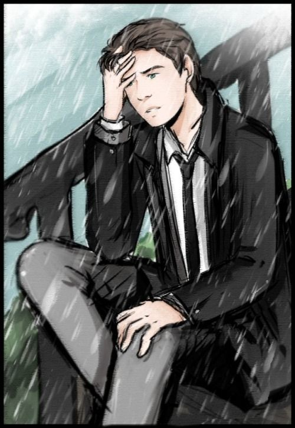
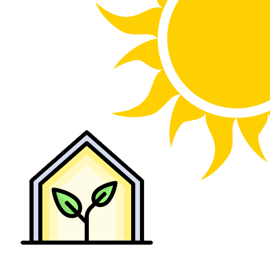

Мои недописанные истории so far:
-
Homo homini или Приключения Кая
Захватывающая история о темноволосом парне, которому, как он сам считает, повезло устроиться на низкоквалифицированную работу в Тетру. Именно этой компании своим существование обязан Лупус - город-государство, отделившееся когда-то от огромной и могущественной страны, а затем полностью поглотившее её в процессе своего ни на минуту не прекращающегося роста и развития...
-
Заботы Говарда
В мире экологической антиутопии человечество в силу тех или иных причин не смогло откликнуться на вызовы меняющихся климатических условий своевременно, в результате чего планета на 80% превратилась в настоящее пекло. Говард и Филлис счастливо живут в небольшой стране, расположенной на севере, куда жара ещё не доползла, поэтому здесь они могут вести почти нормальный образ жизни... Однако подступающие зоны высоких температур - не единственная угроза для цивилизации в пост-экологическую эру: большинство менее удачливых государств раскололись, регрессировали, но так или иначе уцелели и не прочь урвать этот живой участок себе. Войны начинаются и заканчиваются каждый день, Филлис задействует свои знания в попытках помочь вымирающему человечеству, а Говарда заботит нечто совершенно своё...